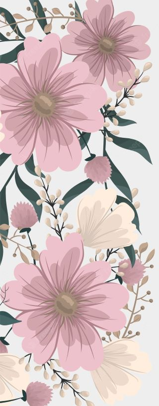

Mon univers
Wedding planner, Organisatrice d’événements privés et Designer floral certifiée je serai ravie de vous accompagner dans l’élaboration de votre projet. J’organise tout type d’évènement privé, je vous accompagne également dans la préparation et l’interprétation de votre cérémonie grâce à mon activité d’officiante de cérémonie personnalisée et laïque. J’aime partager ma passion du végétal autour d’un atelier d’art floral de loisir à votre domicile ou à mon « Concept store » au coeur de la campagne limousine à Bersac sur rivalier ou de manière plus professionnelle je vous accompagne pour l’obtention d’une certification au métier de fleuriste au sein du lycée Saint Jean à Limoges. Également praticienne en art thérapie, nouvelle méthode de développement personnel tendance, je vous accompagne et vous aide à surmonter vos tracas du quotidien grâce à différents médiums artistiques. J’ai hâte de vous rencontrer pour écrire ensemble la prochaine page du livre des aventures Côté Campagne.
Votre Mariage
Vous avez décidé de vous marier prochainement mais vous ne savez pas par où commencer ? Et si vous aviez besoin d’aide pour l’organisation du plus beau jour de votre vie ? J’ai au cours de mes 7 ans d’expérience dans l’évènementiel constitué une équipe de partenaires de confiance, de qualité et sérieux qui remplissent les mêmes valeurs de rigueur, d’exigence et de passion que j’applique personnellement dans mon entreprise. Avant d’être Organisatrice d’événements, je suis artisane et j’attache une importance particulière aux prestations et confections de qualité, tout en veillant au respect de notre environnement. Grâce à ce réseau solide je peux vous proposer des solutions clefs en main ou à la carte pour l’organisation de votre joli jour.
Que vous souhaitiez que je m’occupe de l’ensemble de l’organisation ou que vous ayez besoin simplement d’une aide à la préparation ou même juste une présence pour prendre le relais le Jour J.
J’ai la formule qui correspond à vos envies et votre budget.